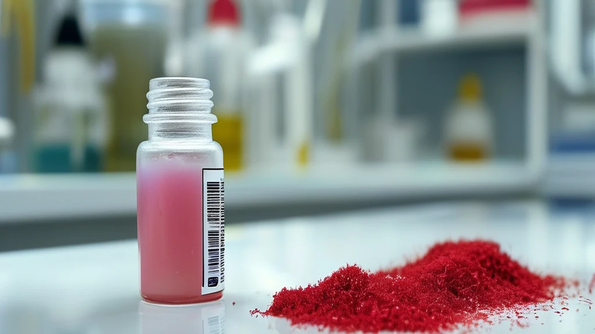
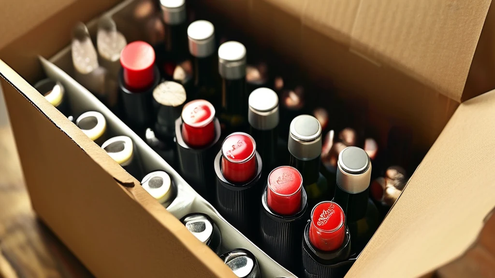

圖片由 AI輔助創作（Kwai-Kolors）Image by AI (Kwai-Kolors)
【鄭哥週評】欄目：鄭哥博客週評｜日期：2026-11-28
這一週的情報，逐條睇係三件唔相干嘅事：江蘇有三十年老牌日化被責令停產，海關發公告講進口標籤要同備案樣稿對得上，藥監局又點名十八批次檢出禁用原料。但三條擺埋一齊，我就睇到同一件事——查嘅對象換咗。以前查「你嗰支貨得唔得」，今次查「你攞唔攞得出嗰本記錄」。貨可以事後補救，記錄補唔返。
圖片由 AI輔助創作（Kwai-Kolors）Image by AI (Kwai-Kolors)
一、查廠查到批記錄：175 家，缺陷率七成六
三十六氪嘅統計：今年一至六月，國家藥監局同三十一個省級藥監部門發咗十六期化妝品飛行檢查通告，通報企業一百三十七家，整體缺陷檢出率七成六點三，比去年同期升兩成三點五；七至十月又檢咗三十八家，到發稿日累計一百七十五家。廣東最集中，個別月份受檢企業「全軍覆沒」。
細節比數字更值得睇。江蘇蘇州一家一九九七年成立嘅老牌日化，今輪被責令停產；湖州開森因為體系有缺陷、冇執行銷售記錄制度、標籤內容唔真實，罰沒超過一百二十八萬元。
時間線再拉長：二〇二五年十二月，國家藥監局印發《化妝品企業生產質量管理體系提升三年行動計劃（二〇二六至二〇二八）》，要求省級部門加大體系監管、缺陷限時整改。也就是講，呢輪唔係一次突擊，係有三年日曆嘅。
來源：36氪《責令停產，30年老牌日化被通報》，2026-11-21｜https://m.36kr.com/p/4022933023182726
圖片由 AI輔助創作（Kwai-Kolors）Image by AI (Kwai-Kolors)
二、查標籤：十二月一日起，要同備案樣稿逐字對
海關總署十一月二十三日發二〇二六年第一百六十二號公告，十二月一日起實施。進口化妝品嘅中文標籤內容，要同藥監備案平台上面嘅產品標籤樣稿相關內容一致；出口報關要揀六一六化妝品生產許可證、填企業名同許可證號，再填註冊或備案編號。
呢條公告嘅殺傷力唔喺字數，喺時間。公告十一月二十三日出，十二月一日生效，中間只有八日；在途貨已經喺海上。標籤同備案樣稿有一處唔同，都屬於「不一致」，處置係退運或者整改。
我判斷，呢一步真正改嘅係責任歸屬。以前標籤係包裝廠同品牌方之間嘅事，錯咗可以話「印廠印錯」；以後標籤係備案文件嘅一部分，錯咗就係備案主體嘅錯。進口商會開始要求供應商提供「樣稿版本號」，冇嘅唔敢接。
來源：海關總署《海關總署公告 2026 年第 162 號（關於進一步規範進出口化妝品安全監管要求的公告）》，鳳凰網轉載全文，2026-11-24｜https://feng.ifeng.com/c/8yJdJEdcMir

圖片由 AI輔助創作（Kwai-Kolors）Image by AI (Kwai-Kolors)
三、查原料同標準：時間表寫死，等於排咗一張變更日曆
十一月二十日，藥監局發二〇二六年第四十二號通告，十八批次化妝品檢出禁用原料，點名嘅包括馥珮水嫩璀璨精華水，已要求立案調查、責令風險控制同自查整改。同一批貨喺拼多多賣過四百一十一萬件——呢個量級說明，問題唔係某一間廠偷偷做，係一整條鏈都當佢冇事。
另一邊亦開咗口子。十一月二十三日，藥監局批准芙洛迪嘅「二羥基吲哚」，係《條例》實施後第一個獲批註冊嘅染髮新原料，低敏染髮由「概念」變成「可備案配方」。同時《牙膏安全通用技術要求》將出台，係牙膏首個強制國標，二〇二七年五月配套目錄實施，存量產品二〇二八年一月前改完備案。
把「收」同「放」擺埋一齊睇，我判斷呢兩年行業最確定嘅工作量唔係開發新品，係改備案。標準一換，配方冇改都要重交資料；新原料一開，舊配方就有咗合規化嘅替代路徑。呢種監管對大廠係成本，對細廠係生死——因為佢要嘅係一套能持續維護嘅文件系統，。
來源：國家藥監局《關於 18 批次化妝品檢出禁用原料的通告（2026 年第 42 號）》，2026-11-20｜https://www.nmpa.gov.cn/xxgk/ggtg/hzhpggtg/hzhpchjgg/hzhpcjgjj/20261120165906159.html
圖片由 AI輔助創作（Kwai-Kolors）Image by AI (Kwai-Kolors)
四、錢唔落喺廠房：原料換東家，外資賣大眾線
十一月二十三日，科萊恩確認同 CD&R 洽談全現金收購亞什蘭，股權估值約三十三點九億美元；亞什蘭個護業務二〇二六財年收入五點九一億美元。呢單買嘅唔係產能，係功能性聚合物、增稠劑嘅配方庫同客戶關係。
同一個月，資生堂把資生堂麗源百分之百股權（連歐珀萊品牌同北京工廠）賣畀 IDG 主導嘅財團；標的二〇二五年營收八點六九億元、淨虧四千一百三十三點七萬元。外資大眾線退場唔係新聞，但連工廠一齊賣，就係把「本地生產」呢一層都交出去。
我判斷，錢買嘅係品牌、渠道同原料配方庫，唔係廠房。咁代工就被兩頭夾：上游原料換東家，條款同價格要重談；下游品牌換東家，合同同賬期要重簽。所以最值錢嘅動作唔係擴產能，係備第二供應商同第二客戶。
來源：科萊恩官網《Clariant confirms talks regarding a potential acquisition of Ashland》，2026-11-23（資生堂剝離歐珀萊見 BeautyNews 行業日報，2026-11-18）｜https://www.clariant.com/en/corporate/news/2026/11/clariant-confirms-talks-regarding-a-potential-acquisition-of-ashland

圖片由 AI輔助創作（Kwai-Kolors）Image by AI (Kwai-Kolors)
五、鄭哥週評
三件事擺埋一齊係同一根線：文件變成生產資料。以前配方係核心資產，廠房係門面；宜家批記錄、標籤樣稿、備案編號呢三樣，才係你能唔能開機嘅前提。門檻由「你識唔識做」變成「你維唔維護得住」。
邊個被擋喺外面？靠補記錄、靠換料降本、標籤印完先算嘅細廠同白牌。佢哋唔係唔識生產，係生產同文件長期分成兩套。而品牌方一定會反過來查供應商——批記錄、樣稿版本、原料備案號，攞唔出就換人。文件齊唔齊，直接變成接單能力。
落回我自己呢一段：脣釉屬蠟基熱灌，喺合作廠做；護膚喺自家廣州廠。要接半成品出海嘅單，先把批記錄、同備案一致嘅標籤樣稿、填得入報關單嘅生產許可證號同備案編號，做成三件標準件。買家第一句會由「幾錢」變成「文件齊唔齊」。
圖片由 AI輔助創作（Kwai-Kolors）Image by AI (Kwai-Kolors)
\[Zheng Ge's Weekly Take\] Column: Zheng Ge's blog weekly take | Date: 2026-11-28
Read this week's cosmetics briefs one by one and you get three unrelated stories: a thirty-year-old daily-chemicals maker in Jiangsu ordered to stop production, a customs announcement requiring Chinese labels on imports to match the filed label draft, and the drug regulator naming eighteen batches that tested positive for banned ingredients. Put the three side by side and I see one thing: what is being inspected has changed. It used to be whether your bottle passes; now it is whether you can produce the paperwork behind it. A bottle can be fixed after the fact. A batch record cannot.
圖片由 AI輔助創作（Kwai-Kolors）Image by AI (Kwai-Kolors)
1. Factory Inspections Now Mean Batch Records: 175 Companies, a 76% Defect Rate
A tally carried by 36Kr is blunt: from January to June this year, the national regulator and 31 provincial counterparts issued 16 unannounced inspection notices covering 137 companies, with an overall defect detection rate of 76.3%, up 23.5% year on year; another 38 were inspected from July to October, bringing the total to 175 as of publication. Guangdong is the densest cluster, with some months where every company inspected failed.
The details matter more than the totals. A Suzhou daily-chemicals maker founded in 1997, chiefly making dish soap and shampoo, was ordered to halt production this round; Huzhou Kaisen was fined and confiscated more than RMB 1.28 million for system defects, failure to keep sales records, and inaccurate labels. Note the grounds: not toxic product, but missing records and untrue labels.
Then stretch the timeline: in December 2025 the national regulator issued a three-year action plan (2026-2028) on raising production quality systems, requiring provinces to inspect harder, set deadlines for fixing defects, and pursue individuals when cases are serious. This is not a raid; it is a calendar.
Source: 36氪《責令停產，30年老牌日化被通報》，2026-11-21 | https://m.36kr.com/p/4022933023182726
圖片由 AI輔助創作（Kwai-Kolors）Image by AI (Kwai-Kolors)
2. Labels: From 1 December, They Must Match the Filed Draft Word for Word
On 23 November the General Administration of Customs issued Announcement No. 162 of 2026, effective 1 December. The Chinese label on imported cosmetics must match the label draft filed on the NMPA registration and filing platform; duty-free imports are exempt except Hainan offshore duty-free, and cross-border e-commerce retail imports follow separate rules. The export side gains requirements too: the declaration must select code 616 (cosmetics production licence) under enterprise qualification and give the producer name and licence number, plus the registration or filing number under product qualification.
The force of this notice is not in its length but in its timing: published 23 November, effective 1 December, eight days apart - and the brief counted five days left, because goods were already at sea. A label that differs from the filed draft in any respect - font size, ingredient order, how an efficacy claim is phrased - counts as inconsistent, and the remedy is return or rectification.
I judge what really changes here is where responsibility sits. A label used to be a matter between the printer and the brand, and a mistake could be blamed on the printer. Now the label is part of the filing, and a mistake is the filer's mistake. Importers will start asking suppliers for a draft version number, and refuse those without one.
Source: 海關總署《海關總署公告 2026 年第 162 號（關於進一步規範進出口化妝品安全監管要求的公告）》，鳳凰網轉載全文，2026-11-24 | https://feng.ifeng.com/c/8yJdJEdcMir
圖片由 AI輔助創作（Kwai-Kolors）Image by AI (Kwai-Kolors)
3. Ingredients and Standards: A Fixed Timetable Is a Change Calendar
On 20 November the NMPA issued Notice No. 42 of 2026: eighteen batches tested positive for banned ingredients, naming Fupai's hydrating essence water among them, across Shanghai, Jiangsu, Zhejiang and Guangdong, with orders to open cases, control risk and self-audit. The same product had sold 4.11 million units on Pinduoduo - a volume that says the problem was not one factory cutting corners quietly, but a whole chain treating it as normal.
The regulator also opened a door. On 23 November it approved Floraderm's dihydroxyindole, the first hair-dye ingredient registered as new since the regulation took effect, one that avoids aniline and peroxide and turns low-irritation dyeing from a concept into a fileable formula. Meanwhile CCTV reported that a general safety standard for toothpaste is coming - the first mandatory national standard for the category - with the supporting catalogue effective May 2027 and existing products to be re-filed by January 2028.
Put the tightening and the opening together and I judge the most certain workload for the next two years is not new product development but re-filing. When a standard changes, an unchanged formula still resubmits; when a new ingredient opens, old formulas gain a compliant substitute. Calendar-style supervision is a cost to big plants and a matter of survival to small ones, because what it demands is a document system you maintain continuously, not a one-off test report.
Source: 國家藥監局《關於 18 批次化妝品檢出禁用原料的通告（2026 年第 42 號）》，2026-11-20 | https://www.nmpa.gov.cn/xxgk/ggtg/hzhpggtg/hzhpchjgg/hzhpcjgjj/20261120165906159.html
圖片由 AI輔助創作（Kwai-Kolors）Image by AI (Kwai-Kolors)
4. The Money Is Not Going into Factories: Ingredient Makers Change Hands, Foreign Mass Brands Exit
On 23 November Clariant confirmed talks with CD&R over an all-cash acquisition of Ashland, valuing equity at about USD 3.39 billion; Ashland's personal-care segment booked USD 591 million in fiscal 2026. What is being bought is not capacity but a library of functional polymers and thickeners plus customer relationships - meaning the cost structure behind a whole set of formulas gets renegotiated.
The same month, Shiseido sold 100% of Shiseido Liyuan - including the Aupres brand and the Beijing plant - to a consortium led by IDG, with delivery from Q4; the target posted RMB 869 million in 2025 revenue and a net loss of RMB 41.34 million. Foreign mass brands leaving is not news, but selling the plant with the brand hands over the local manufacturing layer too.
I judge the money is buying brands, channels and ingredient libraries, not factories. That squeezes contract manufacturers from both ends: upstream, the ingredient supplier changes owner and terms get renegotiated; downstream, the brand changes owner and contracts and payment cycles get re-signed. So the most valuable move this round is not more capacity but a second supplier and a second customer - that keeps you alive better than an extra line.
Source: 科萊恩官網《Clariant confirms talks regarding a potential acquisition of Ashland》，2026-11-23（資生堂剝離歐珀萊見 BeautyNews 行業日報，2026-11-18） | https://www.clariant.com/en/corporate/news/2026/11/clariant-confirms-talks-regarding-a-potential-acquisition-of-ashland
圖片由 AI輔助創作（Kwai-Kolors）Image by AI (Kwai-Kolors)
5. Zheng Ge Weekly Take
Put the three stories together and I see one thread: documents have become means of production. A formula used to be the core asset and the plant the shopfront; now batch records, label drafts and filing numbers are the precondition for switching the line on. The threshold moved from whether you can make it to whether you can keep the paperwork current.
Who gets shut out? Small plants and white-label sellers who patch records afterwards, cut cost by swapping ingredients, and print labels before they check anything. They can manufacture; their production and their paperwork have simply lived as two separate systems. And brands will certainly start auditing suppliers - batch records, draft versions, ingredient filing numbers. Fail to produce them and you are replaced. Complete paperwork becomes order-winning capability.
Back to my own corner: lip gloss is a wax-based hot-pour product, made at a partner plant; skincare runs in our own Guangzhou factory. To take semi-finished export orders, forget the rest for now and turn three things into standard parts: batch records, a label draft that matches the filing, and the production licence and filing numbers that fit a customs declaration. The buyer's first question will shift from how much to whether the file is complete - and that shift has already started this year.